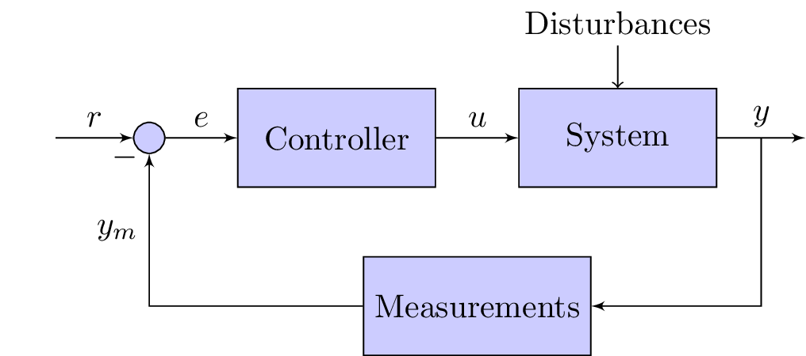

\documentclass{standalone}
\usepackage{tikz}
\usetikzlibrary{shapes,arrows}
\begin{document}
\tikzstyle{block} = [draw, fill=blue!20, rectangle,
minimum height=3em, minimum width=6em]
\tikzstyle{sum} = [draw, fill=blue!20, circle, node distance=1cm]
\tikzstyle{input} = [coordinate]
\tikzstyle{output} = [coordinate]
\tikzstyle{pinstyle} = [pin edge={to-,thin,black}]
% The block diagram code is probably more verbose than necessary
\begin{tikzpicture}[auto, node distance=2cm,>=latex']
% We start by placing the blocks
\node [input, name=input] {};
\node [sum, right of=input] (sum) {};
\node [block, right of=sum] (controller) {Controller};
\node [block, right of=controller, pin={[pinstyle]above:Disturbances},
node distance=3cm] (system) {System};
% We draw an edge between the controller and system block to
% calculate the coordinate u. We need it to place the measurement block.
\draw [->] (controller) -- node[name=u] {$u$} (system);
\node [output, right of=system] (output) {};
\node [block, below of=u] (measurements) {Measurements};
% Once the nodes are placed, connecting them is easy.
\draw [draw,->] (input) -- node {$r$} (sum);
\draw [->] (sum) -- node {$e$} (controller);
\draw [->] (system) -- node [name=y] {$y$}(output);
\draw [->] (y) |- (measurements);
\draw [->] (measurements) -| node[pos=0.99] {$-$}
node [near end] {$y_m$} (sum);
\end{tikzpicture}
\end{document}Created by David Li